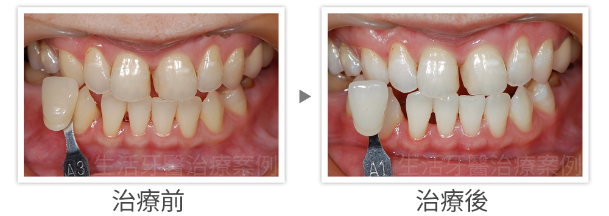
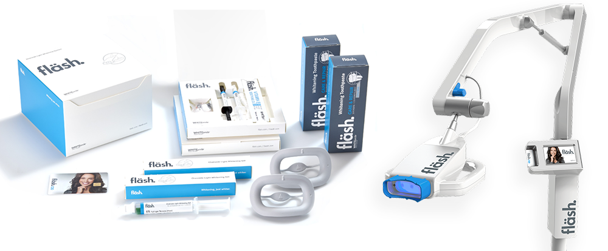
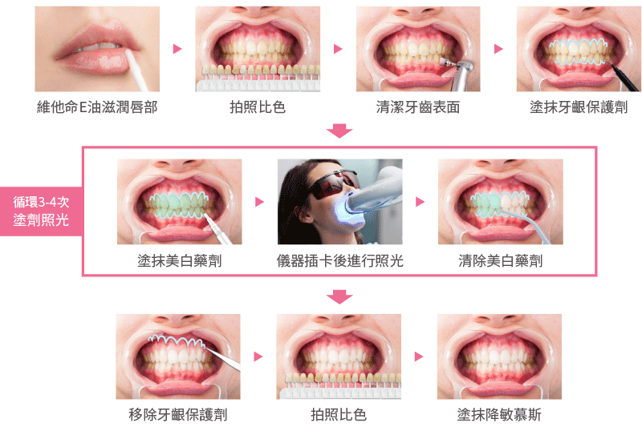

亮白的牙齒不僅能讓笑容更有魅力，對於個人自信也加分不少，現在就以最快速、最受歡迎的牙齒美白療程—冷光美白進行剖析，廣受台中民眾推薦的生活牙醫診所來細細為您解說冷光牙齒美白效果差異、冷光美白價格費用、療程時間、冷光美白維持多久時間和冷光美光副作用等等疑慮，讓你秒懂箇中差異。

牙齒美白的原理
凡居家美白、冷光美白此類的牙齒美白原理其實是利用氧化還原作用，讓多年沈積在牙齒表面的深層色素加以清除，讓齒色回到沒有被染色前的潔白，而冷光美白比起居家美白則是多了冷光儀照射，幫助催化藥劑氧化還原作用，所以更迅速，一次療程即可擁有亮白美齒。

冷光美白的差異
冷光美白成效優劣的要點就在於「藥劑的濃度」以及「冷光儀的強度」。高濃度藥劑雖然效果好，但是帶來的副作用如術後暫時的牙齒酸軟程度也越嚴重，且現今衛福部核准的牙齒美白藥劑濃度上限為6%，而濃度過低的美白藥劑雖然溫和不易酸軟，但是成效不彰也非顧客所樂見的。
比起有些院所偷用衛福部未核准的不安全高濃度藥劑，生活牙醫著眼的是如何在合格的安全範圍內把效果發揮到最大，因此台中生活牙醫診所引進25年牙齒美白大廠fläsh WHITEsmile德國原裝進口的美白光照儀與6%美白藥劑（官網），其美白儀特殊的驅動設計，需要插入美白藥劑隨盒內含的原廠卡片才能啟動，所以保證次次都是採用fläsh原廠德國藥劑，不必擔心魚目混珠；除此以外， 德國fläsh WHITEsmile美白儀操作時可以依照齒況增強光波加強催化，比起一般固定光波能量的儀器效果更佳。

冷光美白療程多久
第一次就診時，醫師會先針對您的牙齒狀況和個人期待做評估，規劃最適合您的美白方式。倘若確認您適合進行冷光美白療程，即可安排下次約診進行療程。第二次就診時，醫師親自操作進行冷光美白療程，冷光美白屬於一次性療程（塗劑照光循環三遍），大約只要60分鐘即可完成，擁有亮白牙齒真的如此簡單又迅速！
冷光美白或牙齒美白能維持多久
實際上冷光美白能夠維持的時間取決於個人習慣，畢竟每次吃飯喝飲料都等同在染色牙齒，減少進食深色食物或飲品、用餐後盡快漱口刷牙，都能幫助延緩牙齒回色時間，如果希望牙齒能再白一點、同時白得久一點，建議搭配居家美白療程，若想一輩子永保牙齒亮白不變色，則可以考慮製作全瓷貼片（亦稱陶瓷貼片、美齒貼片）。
冷光美白的價錢
台中生活牙醫冷光美白收費為13000元（含三遍循環塗劑照光），若冷光美白＋居家美白療程更只要22000元，其他台中正規牙醫診所冷光美白牙齒價錢多落在12000到18000元不等，部份診所及牙齒美容機構則是採照光次數進行收費，進行諮詢時記得詢問清楚其詳細收費和施作方式以避免認知落差造成糾紛。
選擇冷光美白注意事項
冷光美白需要在口腔內操作，實屬「侵入性治療」，請務必選擇正規且由醫師親自操作的牙醫診所來進行療程 ，由於冷光美白藥劑為酸性物質，而牙齒表面又常常會有肉眼難以察覺的裂縫，如流入裂縫恐會導致牙齒內部神經受損甚至壞死，或是若無做好牙齦保護，也有發生牙齦酸蝕潰爛的機率，建議專業的事情還是交由專人處理最有保證。
冷光美白的副作用
根據研究報告及臨床經驗都指出冷光美白其實是非常安全的療程，只要藥劑合格、醫師操作得宜，冷光美白並不會有影響牙齒健康的副作用，只是有些人在術後會有牙齒略感酸軟的不適感，這樣的感覺在24小時內就會緩解，同時您也可以服用診所發予的止痛藥減少不適。此外，假如牙齒砝瑯質鈣化不全或有脫鈣造成的白斑，則會在進行牙齒美白變得更明顯，但並不會影響牙齒健康。
什麼情況下不適合冷光美白
‧已經根管治療過的牙齒：神經受損後造成的牙齒變黑無法透過冷光美白漂白，請改採齒內美白
‧裝戴假牙套或貼片：牙齒美白無法改變贋復物的顏色，只能漂白真牙的顏色
‧四環黴素造成的牙齒變色：牙齒美白對這類內因性牙齒染色成效較差，建議採全瓷貼片改善
‧孕婦：目前雖無研究指出藥劑對胎兒的影響，但安全考量還是不建議施行
冷光美白流程步驟
